When every legal product needs the same files, why store them in different places?
I designed LitBox, a unified file management platform that brings documents, collaboration, and secure storage into one connected experience for legal teams. By replacing fragmented third-party storage dependencies, LitBox creates a shared foundation where Omnis AI products can securely access, manage, and collaborate on files—all within one ecosystem.
- Role
- Product Designer, End-to-End
- Domain
- Legal Tech SaaS · Secure Storage
- Core Problem
- Dependent on Third-Party Storage
- Status
- Internal Beta / Dogfooding
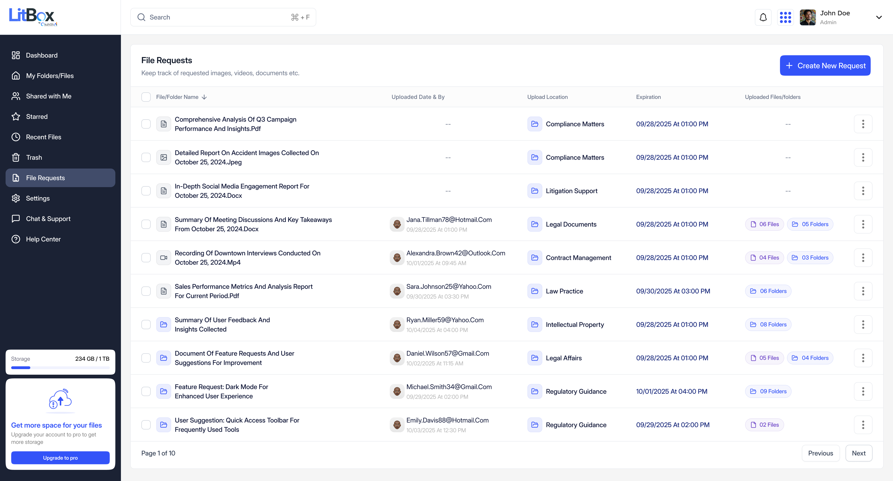
01What we're building
Building a unified legal file layer inside the ecosystem.
LitBox is a dedicated, matter-aware file management platform built to power the entire Omnis AI legal suite.
We replaced fragmented third-party drive dependencies and unaudited sharing links with a single owned foundation.
Here is how LitBox directly tackles three foundational bottlenecks across the legal document lifecycle.
01 — Third-party drive detours before every legal workflow
A file had to exist in Dropbox, Box, or Google Drive before it could touch any Omnis AI product. Attorneys faced repetitive re-authorizations, disconnected accounts, and fragmented storage silos with zero unified matter context.
We're building a unified legal file workspace where documents live natively alongside active matters. LitBox eliminates vendor detours by providing an owned, matter-organized file directory accessible to every tool in the firm.
02 — External file sharing without legal privilege or chain of custody
Requesting confidential records via external drive links exposed sensitive litigation data to unverified vendor security models. Firms lacked automated folder routing, expiration controls, pin security, and matter-level audit logging.
We're building matter-governed File Requests with end-to-end security. Clients upload sensitive files directly into matter folders through encrypted, pin-protected links with custom expirations and real-time audit trails.
03 — Disconnected product silos requiring manual file transfers
CasePro, OmnisProof, and MedChron each handled file ingestion in isolation. Attorneys were forced to repeatedly download files and re-upload them into separate tools, creating duplicate copies and version control chaos.
We're building a shared ecosystem file layer that integrates directly into every Omnis AI product. Through embedded pickers and native APIs, products attach evidence, sign agreements, and extract chronologies without leaving their workflow.
Turn fragmented third-party file storage into a unified, secure document foundation that powers every product and collaboration workflow across the legal ecosystem.
02Why this, why first
Why storage had to ship before the rest of the roadmap
Omnis AI had a full slate of legal products planned — CasePro, OmnisProof, MedChron, NotaryNow, LitDraft, and more — each on its own launch timeline. But every one of them touches a file at some point: CasePro attaches evidence to a matter, OmnisProof signs a document, MedChron organizes medical records chronologically, NotaryNow notarizes a document. If each product solved "where do files live" on its own, the platform would end up with as many storage implementations, security models, and third-party integrations as it had products — instead of one.
That's why LitBox needed to exist before most of those products launched, not after. Shipping it first meant everything built afterward could assume a shared, owned file layer from day one, instead of retrofitting one in once four or five products already had their own quiet workarounds.
CasePro
- Evidence and case files need to be tied to the matter record it manages — LitBox is where that evidence actually lives.
OmnisProof
- E-signature needs a document to sign, in place, without a round trip through a downloaded file.
MedChron
- Medical chronologies are built from records that need a single, permission-aware source instead of scattered copies.
NotaryNow
- Notarization needs the same document trust model as e-signature — one owned layer, not a fourth vendor integration.
My Role
I led this end to end: framing the three problems above from patterns across the products I'd already worked on, the research that grounded the case for owning storage instead of integrating another vendor, the information architecture and permission model, the full UI system, and the integration points — like the "Import from LitBox" pattern used inside other Omnis AI products — that make LitBox a layer the rest of the ecosystem actually plugs into, not a fourth silo next to the other three.
What That Third-Party Detour Actually Looked Like
Dropbox and Box are the two tools that showed up most often as the "first stop" before a file ever reached an Omnis AI product — general-purpose drives with no concept of a legal matter, built for a different job entirely.
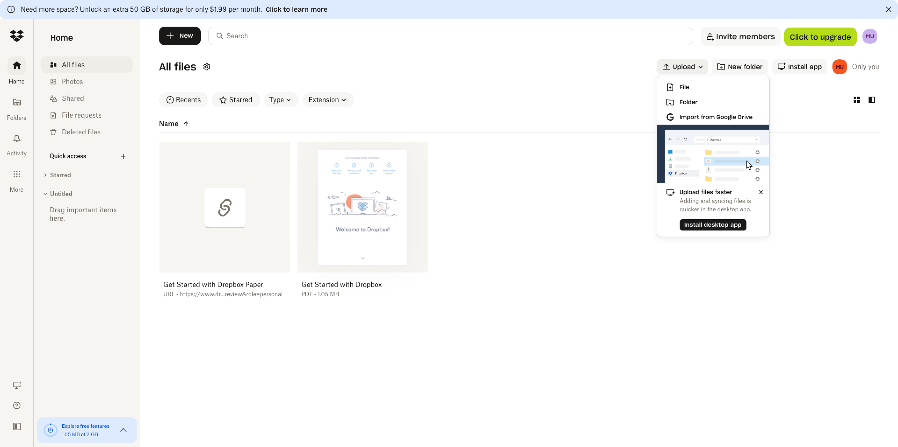

How a File Actually Moved, Before LitBox
Built with the ux-flow-designer methodology used across this case study. The flow below traces one client file from a lawyer's hands to three different Omnis AI products — every red node is friction that existed only because the ecosystem didn't own its own storage layer.
03Research & security context
Why secure storage is a different problem for a law firm
A generic drive protects files. A law firm's drive has to protect privilege — client identities, litigation strategy, medical and financial records, and communications that are confidential by professional obligation, not just by preference. That distinction is what "secure storage" has to mean for LitBox, and it's worth grounding in real incidents rather than abstract risk language.
Three Research Methods, Combined
No single method could carry the case for owning a storage layer on its own — secondary research proves the risk is real, competitive teardown proves the gap is real, and internal conversations proved the demand across products was real. All three live as source material inside the project's Figma file, not just as claims in this case study.
Legal Research
ABA Model Rule 1.6(c), five independently-verified law-firm breach incidents, and what legal-software vendors themselves say "secure" has to include. The full breakdown follows below.
Market & Competitive Research
A module-by-module teardown of Dropbox, Box, and Google Drive — screenshotted, cataloged, and scored for feature parity — is archived as its own research board in Figma, not reconstructed after the fact for this case study. Section 04 shows the results.
Internal Stakeholder Interviews
Not lawyers or paralegals — that gap is called out honestly below. These were working conversations with the AutoDoc, OmnisProof, CasePro, and MedChron product leads that surfaced the pattern behind Section 02: every product was solving "where does the file live" on its own.
Sorting the Raw Findings Into an Information Architecture
Once research surfaced dozens of individual findings — module ideas, competitor features, stakeholder asks — the next problem was turning that pile into a navigation structure a firm could actually use. The diagram below is an illustrative reconstruction of that card-sorting pass, not a literal transcript of the exercise, grouping raw findings into the categories that became LitBox's actual sidebar IA (Section 09).
Five Documented Incidents, Checked Independently
Five law firms were named to me as data-breach examples. Instead of taking the dates at face value, I checked each one against its actual news coverage — and in every case, the date I'd been given was when a lawsuit was filed, not when the breach happened. Real incidents run months to years ahead of the headlines.
Blank Rome LLP
Breach: May 2026, not July 2026. An attacker posed as the firm's IT department and social-engineered an attorney into uploading files to an external Google Drive account. 57,554 individuals affected — SSNs, financial, and medical data. Two proposed class actions (Delapaz and Santana v. Blank Rome) were filed July 6, 2026 in E.D. Pa. — still pending.
Orrick, Herrington & Sutcliffe
Breach: March 2023, not November 2024 — hackers had network access for roughly two weeks. 638,000+ individuals affected, including clients of healthcare-sector entities. The $8M settlement (up to $2,500–$7,500 per claimant) received final approval in November 2024 — that's the date that was actually supplied to me.
WilmerHale
Breach: May 2026, not July 2026 — names and SSNs accessed by an unauthorized third party. WilmerHale states the attacker didn't directly access its systems and found no evidence of misuse. Perry v. WilmerHale was filed July 2026 in D.D.C. — still pending, not yet a confirmed settlement.
Pillsbury Winthrop Shaw Pittman
Breach: April 2025, not November 2025 — a social-engineering attack over a short window. Notification began November 2025, seven months later. Important correction: the proposed class action was not settled — three plaintiffs voluntarily dismissed their suit in S.D.N.Y. after a mediation attempt. I'm not treating this as a firm "loss" to cite.
Gunster, Yoakley & Stewart
Breach: November 2022, not November 2024 — suit filed May 2024, ~746,000 individuals affected. The $8.5M settlement received final court approval in August 2025, not November 2024. Numbers were right; nearly every date needed correcting.
The Rule Lawyers Actually Have to Follow
Lawyers aren't just choosing security software out of caution — a real ethics rule requires it. ABA Model Rule 1.6(c) says a lawyer must take "reasonable efforts" to stop a client's information from leaking, on purpose or by accident. A companion rule says a lawyer has to understand the tools they're using well enough to know the risk. Neither rule names a specific product or certification to use — just "reasonable" and "informed." That's a lower bar than "encrypted" or "fully compliant," which is exactly why I'm not slapping either word on LitBox without proof behind it.
What "Secure" Actually Has to Include
Legal-software vendors (Clio, Sync) and incident write-ups from CloudLex converge on the same short list. This is describing their own practices, not independent research, but the list itself is a useful checklist against a consumer drive:
Sync's own material is blunt about the gap: consumer tools are "designed for a broad audience" and usually skip the access controls and audit trails a firm specifically needs.
04Competitive landscape
Established storage products aren't wrong — they're not built for a legal matter
Google Drive, Dropbox, and Box are mature, well-engineered products used by millions of people, including plenty of law firms. The honest question isn't "are they secure" — it's "do they model the thing a law firm actually organizes around: a matter, not a folder."
Google Drive / Dropbox General Purpose
- Reliable, familiar, deep integration with everyday office tools.
- Sharing is file- or folder-scoped, not matter-scoped — a link can outlive the reason it was created.
- No native concept of a "case," a retention policy, or a legal hold.
- Search finds a file by name or content, not by which matter it belongs to.
Box Enterprise Governance
- Strongest of the general-purpose tools on admin controls, retention, and compliance reporting.
- Still organizes around folders and enterprise groups, not legal matters or case teams.
- No native link into document processing, e-signature, or case-management workflows built for law firms.
Sync.com Privacy-First
- Markets end-to-end/zero-knowledge encryption as a core differentiator for sensitive files.
- Still a standalone drive — no matter context, no case-team permission model, no ecosystem it plugs into.
LitBox Legal-First
- Files and folders behave the way Drive/Dropbox users already expect — same learning curve, familiar patterns.
- Adds a matter-aware permission model, an audit timeline, and File Requests built for external submitters.
- Connects natively into AutoDoc and OmnisProof today, with CasePro and the rest of the ecosystem as the roadmap.
Competitive SWOT
The same three competitors, scored honestly against LitBox rather than dismissed outright — including where LitBox itself is genuinely weaker today.
Dropbox / Google Drive
- Strengths — familiar to nearly every user, deep Office/Workspace integration, mature mobile and desktop sync.
- Weaknesses — no matter context, folder- or file-scoped sharing only, no legal-specific audit trail.
- Opportunities — a firm frustrated by re-uploading the same file into three tools is a switching moment.
- Threats — both could add "legal mode" features faster than a startup can build ecosystem integrations.
Box
- Strengths — the strongest admin/governance/retention tooling of the three general-purpose tools.
- Weaknesses — organized around departments and folders, not matters; no native e-signature or document-intelligence handoff.
- Opportunities — its own governance strength is proof firms will pay for compliance features — LitBox's Audit Timeline targets the same instinct.
- Threats — Box already sells into the enterprise-legal segment LitBox needs; incumbency is a real barrier.
Sync.com
- Strengths — zero-knowledge encryption marketed directly at privacy-conscious buyers, including law firms.
- Weaknesses — still a standalone drive — no matter model, no case-team permissions, nothing to plug into.
- Opportunities — proves firms will pay a premium for "more secure than Dropbox" positioning, which LitBox can pair with ecosystem integration.
- Threats — the closest thing to a shortcut — a firm could get "secure enough" from Sync without ever needing LitBox, which is exactly the case made in Section 01's third problem.
05Solutions considered
Three places the shared file layer could have lived. Two were faster to ship — and wrong
Once "every product needs files and none of them own storage" was clear (Section 02), the fix wasn't obvious yet — it rarely is. These are the three real architectural paths I weighed, not a polished single recommendation dressed up after the fact. The fuller research behind each option — module notes, competitor teardown, stakeholder input — lives as its own set of pages inside the project's Figma file, not just summarized here.
A — Each Product Keeps Its Own Storage
- LitBox becomes a thin UI opened from inside AutoDoc or CasePro — no shared backend, just a nicer picker.
- Fastest to ship — every product already has some upload mechanism to build on.
Rejected — doesn't fix fragmentation, it just re-skins it. Every product still holds its own copy of a file, with no shared audit trail connecting them.
B — Fold Storage Into CasePro
- Build file management as a module inside the case-management CRM, since matters already live there.
- The "obvious" answer — CasePro already owns the concept of a matter.
Rejected — ties every other product's file access to CasePro's release cycle and permission model. MedChron and LitDraft would still need their own workarounds to reach a file.
C — A Standalone Layer, Embeddable Everywhere
- LitBox owns a file once, and exposes a search/picker surface any product can call into — not just link out to.
- Slower to ship than A, more independent than B.
Chosen — the only option where AutoDoc, OmnisProof, MedChron, and LitDraft can each connect on their own timeline, without depending on each other or on CasePro shipping first.
06Product strategy
Turning research into a defensible scope, not a feature wishlist
Problem Statement
Law firms working inside the Omnis AI ecosystem have no shared, secure place to store case files — so every product either builds its own storage or depends on a general-purpose drive that has no concept of a legal matter, a case team, or an audit trail.
Opportunity Statement
A file layer purpose-built for legal matters — with familiar Drive-like interaction patterns — can become the shared foundation the rest of the ecosystem reads from and writes to, instead of each product solving storage on its own.
Product Principles
Familiar First, Legal Second
The core file-management surface should feel like Drive or Dropbox on first use — the legal-specific value should layer on top, not force a new mental model for basic file handling.
Every Action Leaves a Record
Upload, download, share, permission change, restore, delete — the Audit Timeline exists so nothing sensitive happens invisibly.
A Platform, Not a Silo
A file uploaded to LitBox should be reachable from the products that need it — starting with AutoDoc and OmnisProof — instead of requiring a re-upload for every downstream tool.
Who It's For
Not every persona needs the same surface — that shaped the IA more than any single feature request did.
MVP Scope
The internal-beta scope covers the core file-management loop end to end — upload, organize, preview, share, request, restore/delete, search, and audit — plus the confirmed ecosystem connections: AutoDoc via File Requests, OmnisProof via in-document e-signature, and embedded search live inside MedChron and AutoDoc itself (Section 15). A conversational AI assistant, deeper CasePro matter-linking, and broader third-party integrations are explicitly out of MVP scope; see Section 13 for what that AI question actually looks like.
07The transformation
A file's trip through four tools, or through one
The scenario below is an illustrative, research-informed composite — not a transcript of an observed user. I'm marking it that way deliberately, because the difference between "this is what I watched happen" and "this is a representative pattern the research supports" matters.
Before Assumption
- Client emails a PDF; a paralegal downloads it and saves it into a personal or team Drive folder.
- The same file gets re-uploaded into AutoDoc to run document processing.
- A signed version is needed, so it's emailed out again for an e-signature tool.
- Opposing counsel requests the file — it's shared via a public link with no expiry and no record of who opened it.
- Six months later, nobody can say with confidence which copy was the final one.
After LitBox
- File is uploaded once into LitBox and organized into a folder tied to the matter.
- AutoDoc reads the file directly through the File Requests → AutoDoc Documents pipeline — no re-upload.
- E-signature is launched in place from the document's own detail view, no export/re-import step.
- External submissions come back through a File Request with an expiry date, an optional password, and a defined destination folder.
- Every upload, share, permission change, and deletion is written to the Audit Timeline.
08Wireframes & ideation
Before any of the polished screens, low-fidelity layout sketches for every core surface
The high-fidelity screens throughout this case study didn't start high-fidelity. Every core surface went through a layout-only pass first — boxes, hierarchy, and content zones, deliberately stripped of color and type so early feedback stayed about structure, not visual polish. Redrawn below in the same wireframe notation used for this page's own flow diagrams.
More than two dozen empty, error, and permission states were scoped this same low-fidelity way before a single one shipped — see Section 10 for the built result.
09Information architecture
An IA validated against what people actually do with files, not a default sidebar
The navigation below is what's actually built, not a wishlist — it maps directly onto the left sidebar in the shipped screens throughout this case study.
Two Core Flows Worth Walking Through
Uploading into a File Request, end to end. A paralegal opens File Requests → Create New Request, sets a title, a destination folder, an optional deadline and password, and shares it with an external email. The recipient never needs a LitBox account — they land on a scoped upload page. Once submitted, the files route straight into the destination folder, and if that folder is AutoDoc-connected, processing starts without anyone re-uploading anything.
Content search across a matter. Typing into global search surfaces results scoped to Files/Documents, Folders, or Content — the Content tab searches inside text AutoDoc has already extracted, showing the source file, the specific page, and a highlighted snippet, so a user can judge relevance before opening anything.
09The workspace
Designing for the file, and for the moment someone can't access it
Most of a file-management product's design work isn't the happy path — it's what a grid looks like with zero files in it, what happens when someone opens a folder they don't have permission for, and what a delete confirmation says when the action can't be undone after a set window. LitBox's Figma file has more than two dozen empty, error, and permission states designed up front, across core file management, sharing, search, audit, and admin — that scope shaped the workspace as much as the dashboard did.
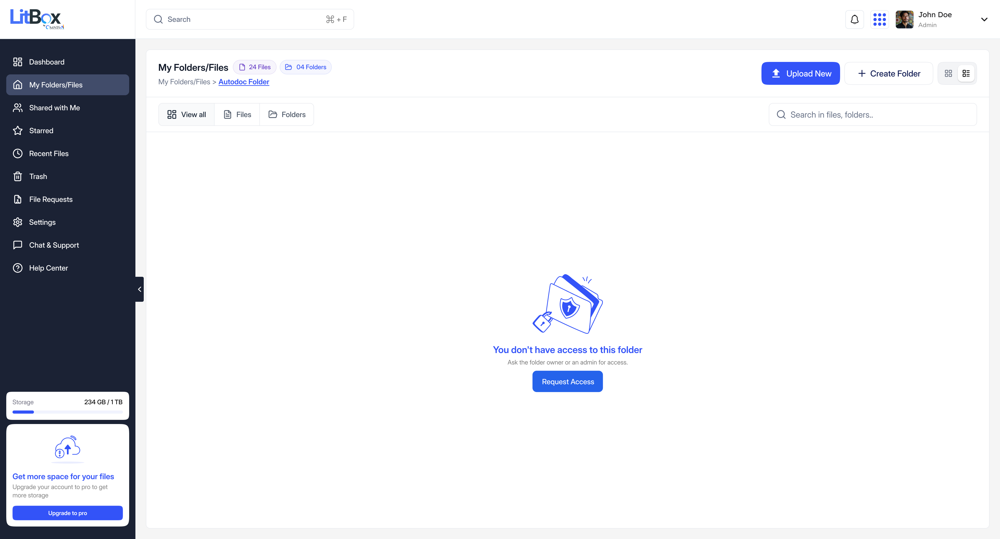
Three Small Decisions, Kept Small On Screen
Upload favors clarity over cleverness. Restore stays quiet — reversible, one click. Delete inside the retention window costs a second's friction on purpose, so nothing sensitive disappears silently.
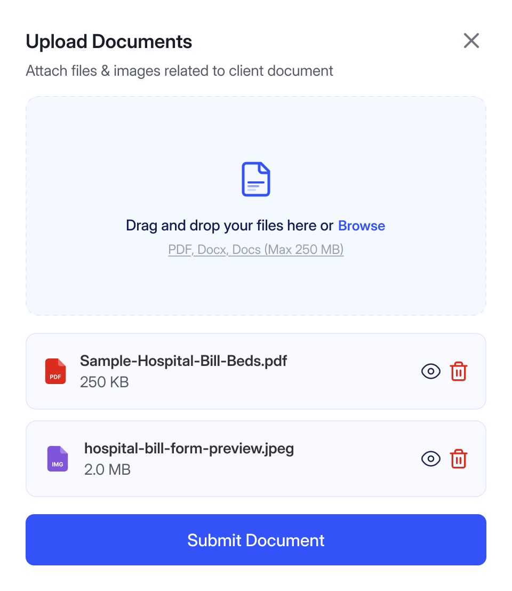
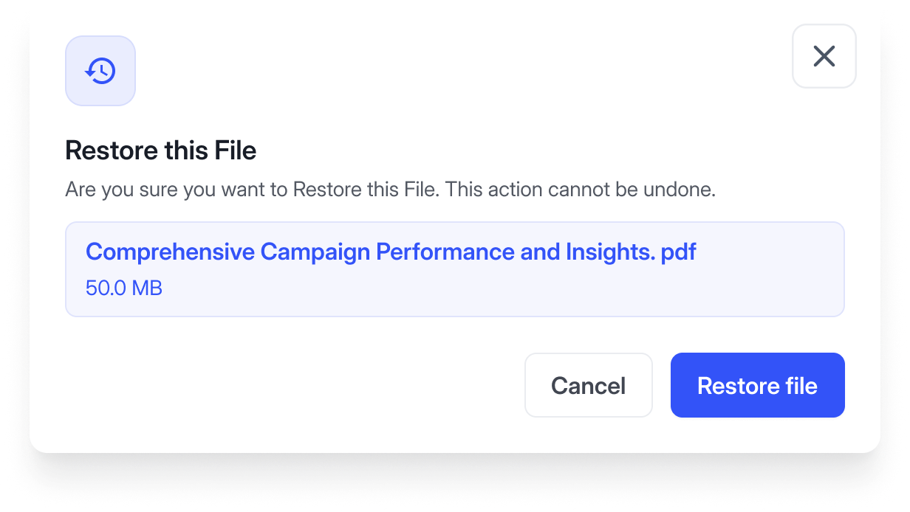
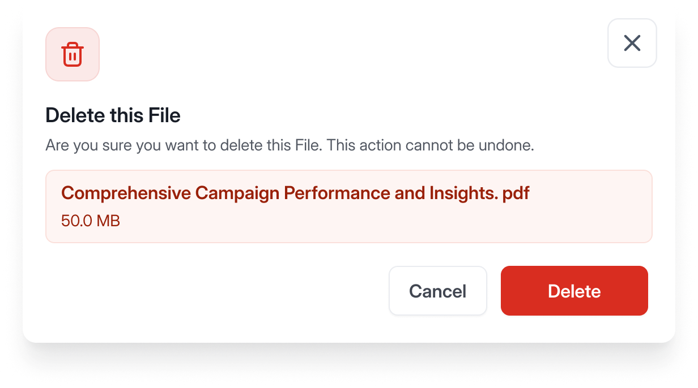
A Named Person, Not a Link Anyone Can Forward
Section 03 named the problem: a public link has no idea who still has it. LitBox's answer is that sharing a file means picking named people and giving each one a specific role — Owner, Editor, or Viewer — instead of generating a link. There's no "anyone with the link can view" option to reach for.

The Audit Timeline — the One Security Surface Actually Built
Every upload, download, share, rename, permission change, and restore is written to a single timeline, filterable by action type, with the file, the user and role, and a timestamp on every row. Alongside the roles above, this is the concrete answer to "how would a firm know who touched a file" — not a proposed capability, something actually built.
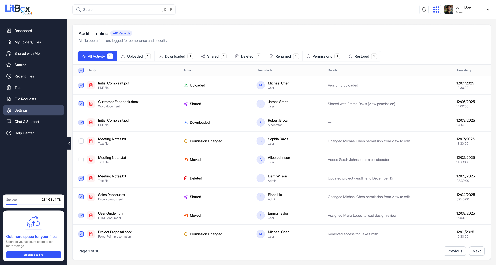
Admin Gets a Different Dashboard, Not a Hidden Toggle
Storage Management is a separate surface for firm admins — total usage, storage by file type, per-user breakdowns, and quota alerts — rather than a setting buried inside the same view every attorney and paralegal sees. Keeping it separate meant the day-to-day file workspace never had to compromise its simplicity to accommodate governance features most users will never open.
The Component Language Behind Every Screen
LitBox doesn't run its own isolated visual language — it's built on the same shared Omnis AI design system every other product in the ecosystem draws from, with LitBox-specific components (the Storage Widget, the Audit Timeline row, File Request cards) layered on top of the shared tokens and primitives. Every screen in this case study draws from that same small set of tokens and components, not a one-off style per page. Everything below is cropped directly from the shipped Figma file — not redrawn, not recreated from memory.
#3353F8Primary actions — Upload New, Create Request#1B2234Navigation rail, the one dark surface in an otherwise light UI#111C53Headings and primary text#667085Secondary text, timestamps, helper copy#FAFAFAPage background, card fills#22C55EAuto-processed tags, search-flow accents
One active/inactive chip state, reused for every filterable list in the product — this row alone covers all eight Audit Timeline categories.

One primary-button style and one context-menu pattern cover every create action and every row action, across Dashboard, My Folders, File Requests, and Trash.

The one data-visualization component in the product — a donut for total usage, plain bars for the type breakdown underneath it.
Icon-plus-count pill for list totals, and the same overlapping 32px avatar circle whether the source is a photo, an initials avatar (see Shared To above), or a plain icon.

One header, unchanged across every screen in the product — search on the left, identity and notifications on the right. Exported as the complete Figma frame, not a manual crop.
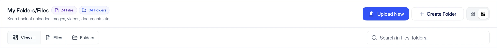
Title, action buttons, view toggle, tabs, and a scoped search — the same two-row header structure behind every list screen in LitBox, not just My Folders/Files.
Same icon-plus-heading-plus-subtext pattern across every empty list in the product — more than two dozen of these exist across file management, sharing, search, audit, and admin.
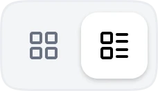
Grid / list toggleRow selection and grid/list layout switching — small controls, used constantly, so they got no visual flourish beyond a clear active state.
Not yet in the shipped Figma file — designed here to complete the pattern using LitBox's own tokens (Primary Blue, the same badge and row-hover language used throughout this case study), not a screenshot.
This is a working component set pulled from a shipped product file, not a formal published design system with documented variants, usage guidelines, or accessibility specs — that distinction matters, so I'm not overstating it.
11Five features, in detail
Five surfaces that carry most of the daily weight
Everything below is a real screen from the shipped Figma file, not a mockup built for this case study.
1. Dashboard, With Full Document Detail
The Dashboard is deliberately data-dense on purpose — storage usage, file/folder counts, and recent activity at a glance, so a firm admin isn't hunting for that information in a separate settings screen. Opening any file surfaces a detail drawer with three views stitched into two tabs: Document Details (who has access, folder metadata, description) and Document Activity (a timeline of edits, renames, and inline comments from the team).


2. Sharing, With Per-Person Roles
Rather than one public link everyone gets the same access to, sharing a file assigns each person a role — Owner, Editor, or Viewer — by email, the way the rest of this case study's honesty framework requires: no overclaiming a password/expiry system that isn't in the shipped file yet. The reference alongside it is what a fuller privacy-and-password layer looks like in a mature product, and the direction the sharing model is headed.
3. Storage Management, Admin Only
A separate permission tier, not a hidden toggle in the same screen everyone sees. Firm admins get organization-wide storage totals, a breakdown by file type, and a per-user table with quota usage — the same screen that would back the "Export Report" a firm's IT lead needs for a compliance review.

4. Tag Management, Finder-Style
Colored tags that work across file types — a document, an image, and a video can all carry the same tag — closer to how macOS Finder tags work than to a folder-only organization scheme. A file can carry more than one tag, so "matter" and "document type" don't have to compete for the same folder slot.

5. Global Search
Search scoped to All Modules, Files/Documents, Folders, or Recent Files, with a clear empty state rather than a blank screen when a query comes back with nothing. Section 12 covers what a populated result actually looks like — path, page, and highlighted snippet — once AutoDoc has extracted a file's text.

12Search & intelligence
Search that reads what AutoDoc already extracted — and an AI assistant that isn't built yet
Two different things live in this section, and I want to keep them clearly separate: content search across AutoDoc-processed documents is designed and functioning in the prototype today. A conversational AI assistant is a direction worth exploring — and explicitly not something LitBox has built.
How Global Search Actually Works
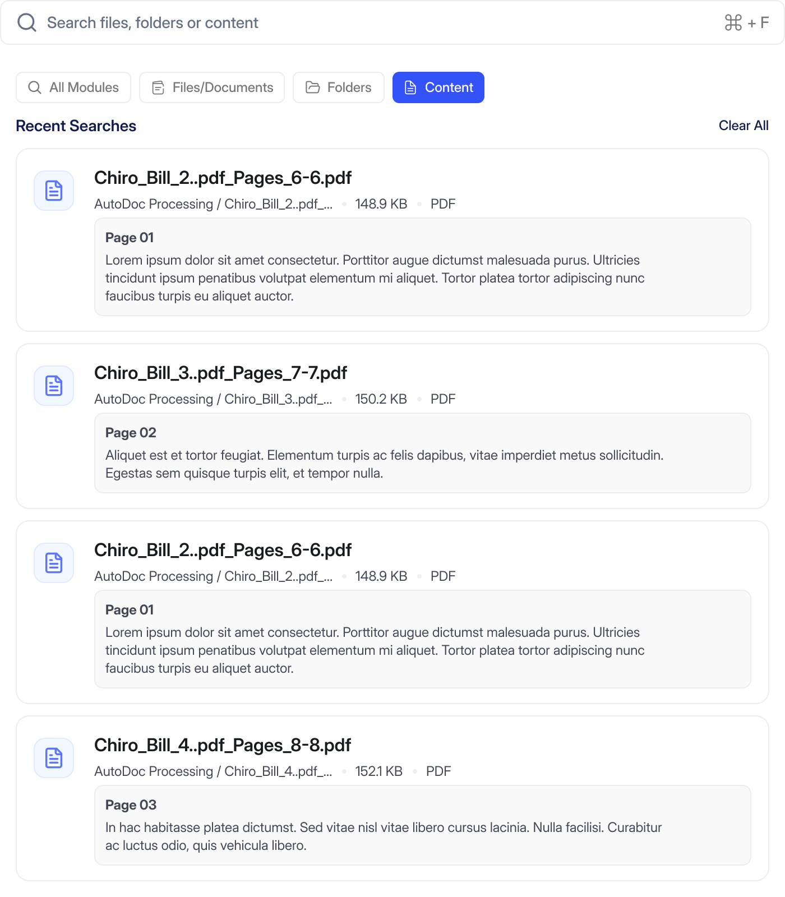
Why This Matters More Than It Looks
"Search inside documents" sounds like a checkbox feature until you consider what it actually required: LitBox's search only works this way because AutoDoc had already extracted text from the file. Search got meaningfully better specifically because LitBox and AutoDoc share a file — not because of anything search-specific LitBox built on its own. Section 15 shows what that sharing looks like from the other direction.
The AI Assistant Question
The module-architecture research behind LitBox sketches use cases like "find all medical records related to this matter" or "summarize these documents" — a conversational layer on top of content search. That thinking has since moved from research notes into concept screens, covered next in Section 13. None of it is shipped or built into the product today — any answer would need a source citation back to the exact file and page it came from, retrieval would need to respect the same permission model as manual search, and it would sit on top of the existing search index rather than replace it.
13Ai assistant (concept)
One assistant, sitting on top of a search index it doesn't have to rebuild
Everything in this section is a concept exploration, not a shipped feature — I want that stated plainly before anything else. Where the rest of this case study distinguishes "Design" (a real screen from the shipped Figma file) from "Reference" (someone else's product), the screens below get their own badge — Concept — because they're neither. They're the current best answer to a real design question: once content search and permissions already work (Sections 12 and 10), what does a conversational layer on top of them actually need to look like?
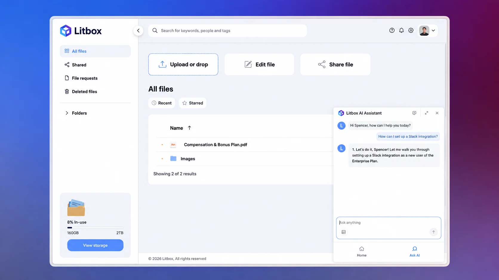
The module-architecture research (Section 03) sketched twelve possible AI workflows. Five are worth showing here — the ones that build most directly on what's already real: content search and the permission model.
1. Natural-Language File Search
- "Find the documents related to the Smith accident that mention vehicle damage" instead of keyword search — returns files with a stated reason each one matched.
2. Document Summary & Q&A
- Ask a question about a file's contents and get an answer traceable back to the exact page — the same citation requirement manual search already meets.
3. Multi-File Comparison & Extraction
- Compare two contract versions clause by clause, with additions, removals, and modifications called out per section.
4. Image & Video Understanding
- Search and reason over evidence photos and video, not just text documents — a gap none of LitBox's current search covers.
5. AI-Assisted Organization & Actions
- Find related files across a matter, flag missing documents, and take a scoped action — always inside the same per-person permission boundary manual sharing already enforces.


14The ecosystem
The part of this product that only makes sense next to the rest of the platform
This section is about LitBox handing files off to the rest of the platform — Section 15 covers the opposite direction, LitBox's own interface running inside other products. Two integrations here are built and working in the current prototype, not proposed on a roadmap slide: File Requests feeding AutoDoc, and e-signature launched directly from a document. Both are shown below exactly as designed.
File Requests → AutoDoc
A File Request isn't just "share a link and wait." It has a title, a description, a destination folder, an optional deadline, password protection, and a defined recipient — and when that destination folder is an AutoDoc-connected folder, submitted files are positioned to be picked up for processing without anyone manually forwarding them.
E-Signature, Launched in Place
Opening a document that needs a signature surfaces a "Continue to e-signature" action that hands off directly into OmnisProof's signer setup — general info, signer list, extra fields, and distribution — without exporting the file and re-uploading it into a separate tool.
Still proposed, not implemented: CasePro matter-linking and a shared permission model spanning the whole ecosystem. MedChron and LitDraft, it turns out, are further along than that — see the next section.
15Litbox everywhere
Pick a file from LitBox once, use it in any product — no re-upload
This is the practical answer to Section 01's first problem. Instead of uploading the same document separately into every Omnis AI product that needs it, a product calls into LitBox directly — a search bar, a document picker — and pulls the file it needs without the user ever leaving the screen they're on. Search doesn't have to mean leaving the tool you're already in — that was the design brief in so many words, down to the internal Figma section literally named "avoid context switching." What follows are staging screenshots of the real thing across three different products, not mockups.
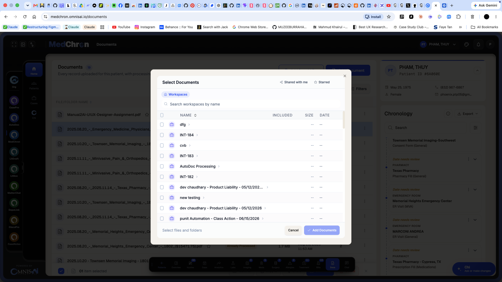
A Third Product, Same Picker Pattern
OmnisProof needs a document to attach a signature workflow to — the exact dependency named in Section 02. Rather than build its own upload flow, it opens the same kind of "Select documents" picker, scoped to the workspaces and matters the signer already has access to.

16Security & trust
Every pattern in this section exists because privilege, not preference, is on the line
Section 03 made the case with documented breaches and an ethics rule; this section is the shorter, practical version — the six trust surfaces that actually show up in the product, gathered in one place instead of scattered across the case study.
Permission-Based Access
- Every file's visibility is scoped to named people and their role, not "anyone with the org login" — the same per-person model shown in Section 11's sharing feature.
Secure File Sharing
- Owner, Editor, or Viewer, assigned per person, per file — no default public-link option to reach for when a scoped share would take one extra click.
Clear Access Visibility
- The Document Details drawer's "Who has access" list (Section 11) means a paralegal can check who can see a file without opening a separate admin screen.
Audit Logs & Activity
- Upload, download, share, permission change, restore, delete — every action lands in the Audit Timeline, the one surface Product Principles (Section 06) singles out by name.
Secure File Requests
- External submitters never get a LitBox account — a request carries a deadline, an optional password, and a defined destination folder instead of an open-ended inbox.
AI Permission Awareness
- Section 13's concept screens mark every AI result "You have access" or "Restricted" before anything else — a design requirement, not a feature the assistant gets to skip.
17Product value
A balanced case, not a "we're just better" claim
"Lawyers will switch because LitBox is more secure" isn't a defensible claim — Drive, Dropbox, and Box are all reasonably secure products. The actual case for LitBox has to rest on something more specific.
What Would Motivate a Switch
- Already using AutoDoc or OmnisProof and tired of re-uploading the same file into each one.
- Need an audit trail for file activity that a general drive doesn't natively provide.
- Want File Requests with expiry and password controls instead of an open-ended public link.
- Consolidating tools rather than adding one more login to an already-fragmented stack.
What Would Stop a Switch
- Migration effort — years of files already organized in an existing drive.
- No SOC 2, HIPAA, or other third-party certification to point to yet.
- Missing desktop sync, mobile apps, and the Microsoft 365 / Google Workspace integrations firms already depend on.
- Trust in an early-stage internal-beta product versus an incumbent with a decade of track record.
The defensible pitch isn't "more secure" — it's "the file layer that gets more useful the more of Omnis AI you already use." That's a narrower claim, and it's one the File Requests → AutoDoc and in-document e-signature flows can actually back up today.
18Final experience & impact
What I can claim, what I can't yet, and what I'd do differently
What Actually Changed for the Ecosystem
Zoom out from any single screen and the shift is structural: Omnis AI went from a set of products that each quietly solved "where do files live" on its own, to a platform with one file layer the rest of it reads from and writes to. AutoDoc picks up files without a manual re-upload. OmnisProof signs a document in place. MedChron and LitDraft search the same index LitBox itself searches. None of that required a firm to change how they work — it required Omnis AI to stop asking every product to solve storage twice.
For the Firm
- One place to upload a file instead of one per tool it needs to reach.
- A permission model and audit trail built for a legal matter, not adapted from a generic drive.
- Fewer uncontrolled public links, because a scoped File Request or a per-person role is the default path, not an extra step.
For the Ecosystem
- New products — NotaryNow, deeper CasePro matter-linking — can assume a shared file layer exists instead of building their own.
- Search and AI-assisted workflows (Section 13) get more useful the more products connect to the same index, not less.
- A file's security posture no longer depends on which third-party vendor happened to hold it that week.
None of this makes LitBox "done." It makes the third problem from Section 01 — an ecosystem that wasn't actually one — no longer true by default. That's the specific claim this case study is willing to make.
Impact — Honestly Framed
Measured
None yet. LitBox is in internal beta with no usage baseline to report — I'm not going to invent adoption numbers or time-savings percentages to make this section look stronger.
Observed
AutoDoc and OmnisProof integrations work end to end in the prototype, and staging screenshots confirm search is already live inside MedChron and AutoDoc. A structured UI-QA pass produced concrete, actionable fixes I designed against — real iteration, even without formal usability-test data.
Expected
Reduced re-uploading across AutoDoc/OmnisProof workflows, a defensible audit trail for firms handling sensitive files, and fewer uncontrolled public links — all hypotheses to validate once real usage exists, not claims to make today.
My Role
I owned LitBox's product design end to end: the competitive and module-architecture research that scoped what "parity with Dropbox and Box" actually required, the information architecture, the full UI system across file management, sharing, search, audit, and admin, and the design of its live ecosystem connections into AutoDoc, OmnisProof, MedChron, and LitDraft. The empty-state, error-state, and permission-state documentation — more than two dozen scenarios specified before a single one shipped — was mine to define, not a gap engineering had to fill in later.
What I Learned
Shared infrastructure is a different job
- LitBox's users aren't just attorneys and paralegals — they're also AutoDoc and OmnisProof. A broken assumption in a file's metadata breaks someone else's product, not just this one.
A parity checklist isn't a strategy
- The Dropbox/Box feature-parity research was necessary groundwork, but the real differentiation came from two questions a parity table can't answer: which matter does this belong to, and who downstream needs it.
Security language has to earn its claims
- It was easier to write "SOC 2 compliant" into an early feature list than to confirm it was true. Separating planned from verified capability was a discipline I had to actively maintain, not a default.
Edge cases first is what makes it feel real
- Designing 25+ empty and error states before the happy path ships is the difference between a prototype and a demo that only works when everything goes right.
More case studies
Want to see more? Browse all work or get in touch.
 I replaced OmnisProof's disjointed modal wizard and manual field placement with a persistent canvas and reviewable AI detection.
I replaced OmnisProof's disjointed modal wizard and manual field placement with a persistent canvas and reviewable AI detection.
 I designed an AI transcription and synthesis workspace that anchors client conversations to litigation discovery files.
I designed an AI transcription and synthesis workspace that anchors client conversations to litigation discovery files.
 Designing an autonomous staging review engine that detects UI regressions, verifies accessibility, and delivers developer-ready PR reports in Slack.
Designing an autonomous staging review engine that detects UI regressions, verifies accessibility, and delivers developer-ready PR reports in Slack.